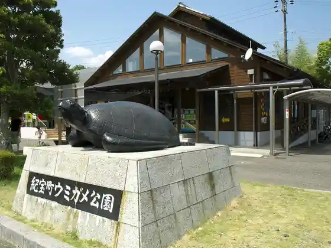
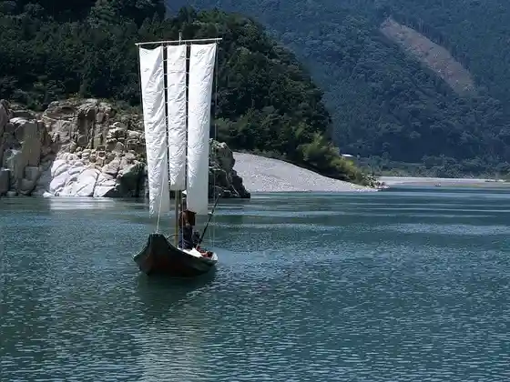
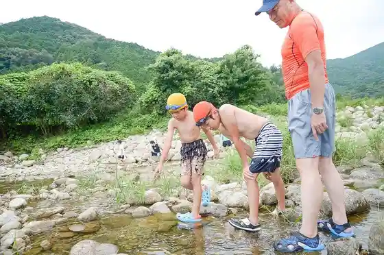
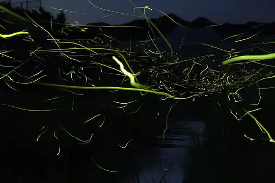

Roadside Station (Kiho Umigame Park)
Kiho, Mie · 0735-33-0300 · Official / source link

Kumanogawa Taikan Juku
Kiho, Mie · 0735-21-0314 · Official / source link

Osato Shinsui Park Nature Puru
Kiho, Mie · 0735-33-0341 · Official / source link

Kiho Hotaru no Rambu
Kiho, Mie · 0735-33-0334 · Official / source link

Hisetsu Falls Campground
Kiho, Mie · 0735-21-1333 · Official / source link
Kumanogawa (Kumano Kodo Ise Michi)
Kiho, Mie · 0597-89-6172 · Official / source link
Mifune Shima
Kiho, Mie · 0735-33-0334 · Official / source link
Kuma no Kawa Asobi Bu
Kiho, Mie · 090-1077-1725 · Official / source link
Ko no Haku Sancho Ni Nobori, Yama to Keikoku Wota no Shimu Haikingukosu
Kiho, Mie · 0735-33-0334 · Official / source link
Kami Nai Shrine (Koyasu Shrine)
Kiho, Mie · 0735-33-0334 · Official / source link
Hisetsu Falls
Kiho, Mie · 0735-33-0334 · Official / source link
Dai Eboshi Yama Misago Iwa
Kiho, Mie · 0735-33-0334 · Official / source link
Sen Sato Ni Falls (Promenade)
Kiho, Mie · 0735-33-0334 · Official / source link
Hirao I Kusurishi
Kiho, Mie · 0735-33-0334 · Official / source link
Takashi Ne Tani Sha
Kiho, Mie · 0735-33-0334 · Official / source link
Kiho Furusato Museum (Midori Village)
Kiho, Mie · 0735-33-1010 · Official / source link
Kami Uchigami Sha Juso
Kiho, Mie · 0735-33-0334 · Official / source link
Ushi no Se
Kiho, Mie · 0735-33-0334 · Official / source link
Udono Joshi
Kiho, Mie · 0735-33-0334 · Official / source link
Karasu Shi no Shrine
Kiho, Mie · 0735-33-0334 · Official / source link
Ida Kannon
Kiho, Mie · 0735-33-0334 · Official / source link
Hokyo Into
Kiho, Mie · 0735-32-0241 · Official / source link
Kawabata Kaido (Kawa Take Kaido)
Kiho, Mie · 0735-33-0334 · Official / source link